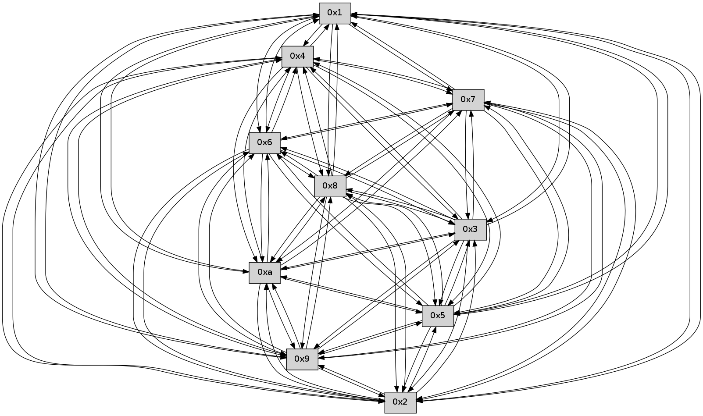

>> << IDX [start] -100 -25 -5 +0 +5 +25 +100 [225.065591097]
 Previous packets
----------------------------------------------------------------------
220.316818 beacon01(faad) #0 coord=01,02,03,04,05,06,07,0a,09,08 cycle=688.0ms assoc
-- color-indic=0 64 21 74
220.326800 beacon02(faad) #0 coord=01,02,03,04,05,06,07,0a,09,08 cycle=688.0ms assoc 64 b2 45
220.336799 beacon03(faad) #0 coord=01,02,03,04,05,06,07,0a,09,08 cycle=688.0ms assoc 64 c8 08
220.346802 beacon04(faad) #0 coord=01,02,03,04,05,06,07,0a,09,08 cycle=688.0ms assoc 64 bf e2
220.356801 beacon05(faad) #0 coord=01,02,03,04,05,06,07,0a,09,08 cycle=688.0ms assoc 64 c5 af
220.366800 beacon06(faad) #0 coord=01,02,03,04,05,06,07,0a,09,08 cycle=688.0ms assoc 64 4b 78
220.376802 beacon07(faad) #0 coord=01,02,03,04,05,06,07,0a,09,08 cycle=688.0ms assoc 64 31 35
220.386806 beacon0a(faad) #0 coord=01,02,03,04,05,06,07,0a,09,08 cycle=688.0ms assoc 64 40 3e
220.396805 beacon09(faad) #0 coord=01,02,03,04,05,06,07,0a,09,08 cycle=688.0ms assoc 64 ce e9
220.406806 beacon08(faad) #0 coord=01,02,03,04,05,06,07,0a,09,08 cycle=688.0ms assoc 64 b4 a4
220.421620 [Hello(8): seq=88 sym=5,2,3,4,7,6,9,10,1 sysInfo= stat=5:4,0,0,0/2:4,0,0,0/3:7,0,0,0/4:10,0,0,0/7:15,0,0,0/6:4,0,0,0/9:6,0,0,0/10:0,0,0,0/1:13,0,0,0]
220.424639 [Hello(7): seq=145 sym=2,3,5,6,4,8,9,10,1 sysInfo= stat=2:4,0,0,0/3:3,0,0,0/5:0,0,0,0/6:5,0,0,0/4:6,0,0,0/8:12,0,0,0/9:10,0,0,0/10:3,0,0,0/1:12,0,0,0]
220.428799 [Hello(10): seq=77 sym=6,3,2,5,9,8,7,4,1 sysInfo= stat=6:12,0,0,0/3:3,0,0,0/2:6,0,0,0/5:8,0,0,0/9:12,0,0,0/8:12,0,0,0/7:13,0,0,0/4:2,0,0,0/1:15,0,0,0]
----------------------------------------------------------------------
221.104949 beacon01(faad) #0 coord=01,02,03,04,05,06,07,0a,09,08 cycle=688.0ms assoc
-- color-indic=0 64 e5 7a
221.114933 beacon02(faad) #0 coord=01,02,03,04,05,06,07,0a,09,08 cycle=688.0ms assoc 64 76 4b
221.124930 beacon03(faad) #0 coord=01,02,03,04,05,06,07,0a,09,08 cycle=688.0ms assoc 64 0c 06
221.134932 beacon04(faad) #0 coord=01,02,03,04,05,06,07,0a,09,08 cycle=688.0ms assoc 64 7b ec
221.144932 beacon05(faad) #0 coord=01,02,03,04,05,06,07,0a,09,08 cycle=688.0ms assoc 64 01 a1
221.154931 beacon06(faad) #0 coord=01,02,03,04,05,06,07,0a,09,08 cycle=688.0ms assoc 64 8f 76
221.164931 beacon07(faad) #0 coord=01,02,03,04,05,06,07,0a,09,08 cycle=688.0ms assoc 64 f5 3b
221.174937 beacon0a(faad) #0 coord=01,02,03,04,05,06,07,0a,09,08 cycle=688.0ms assoc 64 84 30
221.184937 beacon09(faad) #0 coord=01,02,03,04,05,06,07,0a,09,08 cycle=688.0ms assoc 64 0a e7
221.194938 beacon08(faad) #0 coord=01,02,03,04,05,06,07,0a,09,08 cycle=688.0ms assoc 64 70 aa
221.205805 [Hello(1): seq=54 sym=4,2,9,5,10,3,8,6,7 sysInfo= stat=4:9,0,0,0/2:15,0,0,0/9:9,0,0,0/5:14,0,0,0/10:5,0,0,0/3:11,0,0,0/8:8,0,0,0/6:14,0,0,0/7:14,0,0,0]
221.209105 [Hello(3): seq=146 sym=5,7,6,4,2,8,9,10,1 sysInfo= stat=5:0,0,0,0/7:0,0,0,0/6:11,0,0,0/4:12,0,0,0/2:1,0,0,0/8:3,0,0,0/9:11,0,0,0/10:0,0,0,0/1:7,0,0,0]
221.214368 [Hello(5): seq=146 sym=7,6,4,2,3,9,8,10,1 sysInfo= stat=7:2,0,0,0/6:0,0,0,0/4:10,0,0,0/2:7,0,0,0/3:3,0,0,0/9:10,0,0,0/8:4,0,0,0/10:12,0,0,0/1:5,0,0,0]
221.219819 [Hello(2): seq=144 sym=4,5,7,6,3,9,8,10,1 sysInfo= stat=4:9,0,0,0/5:14,0,0,0/7:7,0,0,0/6:12,0,0,0/3:12,0,0,0/9:13,0,0,0/8:14,0,0,0/10:7,0,0,0/1:13,0,0,0]
221.223110 [Hello(4): seq=146 sym=5,7,6,2,3,9,8,10,1 sysInfo= stat=5:14,0,0,0/7:8,0,0,0/6:10,0,0,0/2:3,0,0,0/3:14,0,0,0/9:11,0,0,0/8:15,0,0,0/10:13,0,0,0/1:1,0,0,0]
----------------------------------------------------------------------
221.893081 beacon01(faad) #0 coord=01,02,03,04,05,06,07,0a,09,08 cycle=688.0ms assoc
-- color-indic=0 64 59 7f
221.903061 beacon02(faad) #0 coord=01,02,03,04,05,06,07,0a,09,08 cycle=688.0ms assoc 64 ca 4e
221.913063 beacon03(faad) #0 coord=01,02,03,04,05,06,07,0a,09,08 cycle=688.0ms assoc 64 b0 03
221.923064 beacon04(faad) #0 coord=01,02,03,04,05,06,07,0a,09,08 cycle=688.0ms assoc 64 c7 e9
221.933064 beacon05(faad) #0 coord=01,02,03,04,05,06,07,0a,09,08 cycle=688.0ms assoc 64 bd a4
221.943064 beacon06(faad) #0 coord=01,02,03,04,05,06,07,0a,09,08 cycle=688.0ms assoc 64 33 73
221.953063 beacon07(faad) #0 coord=01,02,03,04,05,06,07,0a,09,08 cycle=688.0ms assoc 64 49 3e
221.963069 beacon0a(faad) #0 coord=01,02,03,04,05,06,07,0a,09,08 cycle=688.0ms assoc 64 38 35
221.973068 beacon09(faad) #0 coord=01,02,03,04,05,06,07,0a,09,08 cycle=688.0ms assoc 64 b6 e2
221.983070 beacon08(faad) #0 coord=01,02,03,04,05,06,07,0a,09,08 cycle=688.0ms assoc 64 cc af
221.994535 [Hello(10): seq=78 sym=6,3,2,5,9,8,7,4,1 sysInfo= stat=6:12,0,0,0/3:4,0,0,0/2:7,0,0,0/5:9,0,0,0/9:12,0,0,0/8:12,0,0,0/7:13,0,0,0/4:3,0,0,0/1:0,0,0,0]
221.997251 [Hello(8): seq=89 sym=5,2,3,4,7,6,9,10,1 sysInfo= stat=5:5,0,0,0/2:5,0,0,0/3:8,0,0,0/4:11,0,0,0/7:0,0,0,0/6:4,0,0,0/9:6,0,0,0/10:1,0,0,0/1:14,0,0,0]
222.000729 [Hello(6): seq=146 sym=2,3,5,4,7,9,8,10,1 sysInfo= stat=2:10,0,0,0/3:4,0,0,0/5:14,0,0,0/4:12,0,0,0/7:9,0,0,0/9:14,0,0,0/8:15,0,0,0/10:12,0,0,0/1:10,0,0,0]
222.003421 [Hello(7): seq=146 sym=2,3,5,6,4,8,9,10,1 sysInfo= stat=2:5,0,0,0/3:4,0,0,0/5:1,0,0,0/6:5,0,0,0/4:7,0,0,0/8:12,0,0,0/9:10,0,0,0/10:4,0,0,0/1:13,0,0,0]
222.010305 [Hello(9): seq=89 sym=5,2,3,4,7,6,8,10,1 sysInfo= stat=5:11,0,0,0/2:13,0,0,0/3:1,0,0,0/4:6,0,0,0/7:1,0,0,0/6:9,0,0,0/8:9,0,0,0/10:4,0,0,0/1:10,0,0,0]
----------------------------------------------------------------------
222.681213 beacon01(faad) #0 coord=01,02,03,04,05,06,07,0a,09,08 cycle=688.0ms assoc
-- color-indic=0 64 6d 67
222.691195 beacon02(faad) #0 coord=01,02,03,04,05,06,07,0a,09,08 cycle=688.0ms assoc 64 fe 56
222.701197 beacon03(faad) #0 coord=01,02,03,04,05,06,07,0a,09,08 cycle=688.0ms assoc 64 84 1b
222.711196 beacon04(faad) #0 coord=01,02,03,04,05,06,07,0a,09,08 cycle=688.0ms assoc 64 f3 f1
222.721195 beacon05(faad) #0 coord=01,02,03,04,05,06,07,0a,09,08 cycle=688.0ms assoc 64 89 bc
222.731197 beacon06(faad) #0 coord=01,02,03,04,05,06,07,0a,09,08 cycle=688.0ms assoc 64 07 6b
222.741196 beacon07(faad) #0 coord=01,02,03,04,05,06,07,0a,09,08 cycle=688.0ms assoc 64 7d 26
222.751203 beacon0a(faad) #0 coord=01,02,03,04,05,06,07,0a,09,08 cycle=688.0ms assoc 64 0c 2d
222.761201 beacon09(faad) #0 coord=01,02,03,04,05,06,07,0a,09,08 cycle=688.0ms assoc 64 82 fa
222.771200 beacon08(faad) #0 coord=01,02,03,04,05,06,07,0a,09,08 cycle=688.0ms assoc 64 f8 b7
222.782671 [Hello(5): seq=147 sym=7,6,4,2,3,9,8,10,1 sysInfo= stat=7:3,0,0,0/6:1,0,0,0/4:11,0,0,0/2:8,0,0,0/3:3,0,0,0/9:11,0,0,0/8:5,0,0,0/10:13,0,0,0/1:5,0,0,0]
222.785383 [Hello(2): seq=145 sym=4,5,7,6,3,9,8,10,1 sysInfo= stat=4:10,0,0,0/5:14,0,0,0/7:8,0,0,0/6:13,0,0,0/3:12,0,0,0/9:14,0,0,0/8:15,0,0,0/10:8,0,0,0/1:13,0,0,0]
222.788226 [Hello(4): seq=147 sym=5,7,6,2,3,9,8,10,1 sysInfo= stat=5:14,0,0,0/7:9,0,0,0/6:11,0,0,0/2:3,0,0,0/3:14,0,0,0/9:12,0,0,0/8:0,0,0,0/10:14,0,0,0/1:1,0,0,0]
222.792540 [Hello(3): seq=147 sym=5,7,6,4,2,8,9,10,1 sysInfo= stat=5:1,0,0,0/7:1,0,0,0/6:12,0,0,0/4:13,0,0,0/2:2,0,0,0/8:4,0,0,0/9:12,0,0,0/10:1,0,0,0/1:7,0,0,0]
223.489328 beacon03(faad) #0 coord=01,02,03,04,05,06,07,0a,09,08 cycle=688.0ms assoc 64 38 1e
223.539333 beacon0a(faad) #0 coord=01,02,03,04,05,06,07,0a,09,08 cycle=688.0ms assoc 64 b0 28
223.570245 [Hello(8): seq=90 sym=5,2,3,4,7,6,9,10,1 sysInfo= stat=5:6,0,0,0/2:6,0,0,0/3:9,0,0,0/4:12,0,0,0/7:1,0,0,0/6:5,0,0,0/9:7,0,0,0/10:1,0,0,0/1:14,0,0,0]
223.573560 [Hello(7): seq=147 sym=2,3,5,6,4,8,9,10,1 sysInfo= stat=2:6,0,0,0/3:5,0,0,0/5:2,0,0,0/6:5,0,0,0/4:8,0,0,0/8:12,0,0,0/9:11,0,0,0/10:4,0,0,0/1:13,0,0,0]
223.576432 [Hello(9): seq=90 sym=5,2,3,4,7,6,8,10,1 sysInfo= stat=5:12,0,0,0/2:14,0,0,0/3:2,0,0,0/4:7,0,0,0/7:1,0,0,0/6:9,0,0,0/8:9,0,0,0/10:4,0,0,0/1:10,0,0,0]
223.582272 [Hello(10): seq=79 sym=6,3,2,5,9,8,7,4,1 sysInfo= stat=6:13,0,0,0/3:5,0,0,0/2:8,0,0,0/5:9,0,0,0/9:13,0,0,0/8:13,0,0,0/7:14,0,0,0/4:4,0,0,0/1:1,0,0,0]
223.586004 [Hello(6): seq=147 sym=2,3,5,4,7,9,8,10,1 sysInfo= stat=2:11,0,0,0/3:5,0,0,0/5:15,0,0,0/4:13,0,0,0/7:10,0,0,0/9:15,0,0,0/8:15,0,0,0/10:12,0,0,0/1:10,0,0,0]
----------------------------------------------------------------------
224.257476 beacon01(faad) #0 coord=01,02,03,04,05,06,07,0a,09,08 cycle=688.0ms assoc
-- color-indic=0 64 15 6c
224.267458 beacon02(faad) #0 coord=01,02,03,04,05,06,07,0a,09,08 cycle=688.0ms assoc 64 86 5d
224.277458 beacon03(faad) #0 coord=01,02,03,04,05,06,07,0a,09,08 cycle=688.0ms assoc 64 fc 10
224.287459 beacon04(faad) #0 coord=01,02,03,04,05,06,07,0a,09,08 cycle=688.0ms assoc 64 8b fa
224.297458 beacon05(faad) #0 coord=01,02,03,04,05,06,07,0a,09,08 cycle=688.0ms assoc 64 f1 b7
224.307458 beacon06(faad) #0 coord=01,02,03,04,05,06,07,0a,09,08 cycle=688.0ms assoc 64 7f 60
224.317460 beacon07(faad) #0 coord=01,02,03,04,05,06,07,0a,09,08 cycle=688.0ms assoc 64 05 2d
224.327463 beacon0a(faad) #0 coord=01,02,03,04,05,06,07,0a,09,08 cycle=688.0ms assoc 64 74 26
224.337467 beacon09(faad) #0 coord=01,02,03,04,05,06,07,0a,09,08 cycle=688.0ms assoc 64 fa f1
224.347464 beacon08(faad) #0 coord=01,02,03,04,05,06,07,0a,09,08 cycle=688.0ms assoc 64 80 bc
224.358615 [Hello(3): seq=148 sym=5,7,6,4,2,8,9,10,1 sysInfo= stat=5:1,0,0,0/7:2,0,0,0/6:13,0,0,0/4:13,0,0,0/2:2,0,0,0/8:5,0,0,0/9:13,0,0,0/10:2,0,0,0/1:7,0,0,0]
224.361978 [Hello(1): seq=56 sym=4,2,9,5,10,3,8,6,7 sysInfo= stat=4:11,0,0,0/2:1,0,0,0/9:11,0,0,0/5:15,0,0,0/10:7,0,0,0/3:13,0,0,0/8:10,0,0,0/6:0,0,0,0/7:0,0,0,0]
224.369448 [Hello(4): seq=148 sym=5,7,6,2,3,9,8,10,1 sysInfo= stat=5:14,0,0,0/7:10,0,0,0/6:12,0,0,0/2:3,0,0,0/3:15,0,0,0/9:13,0,0,0/8:1,0,0,0/10:15,0,0,0/1:1,0,0,0]
224.379151 [Hello(5): seq=148 sym=7,6,4,2,3,9,8,10,1 sysInfo= stat=7:4,0,0,0/6:2,0,0,0/4:12,0,0,0/2:9,0,0,0/3:4,0,0,0/9:12,0,0,0/8:6,0,0,0/10:14,0,0,0/1:5,0,0,0]